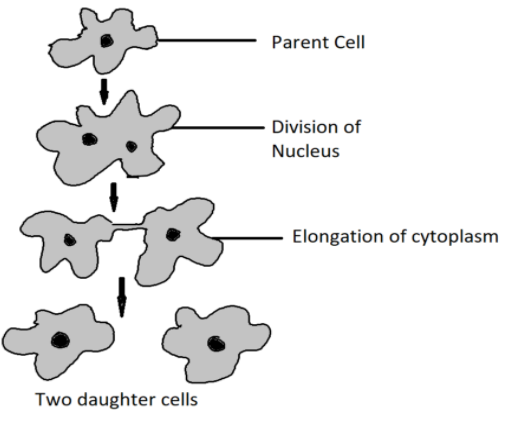
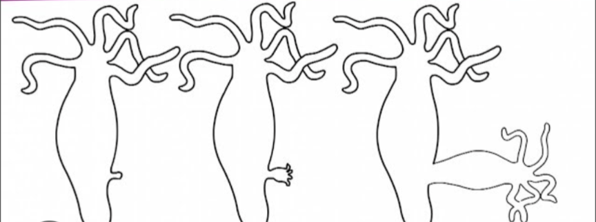
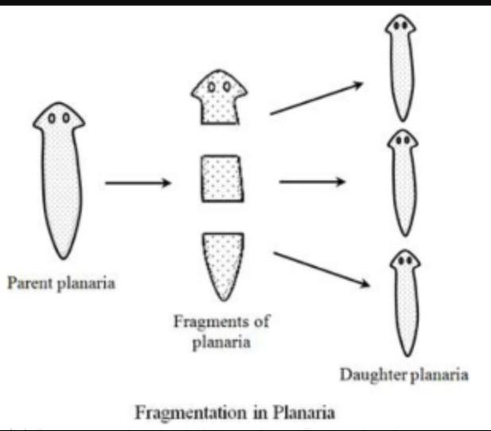
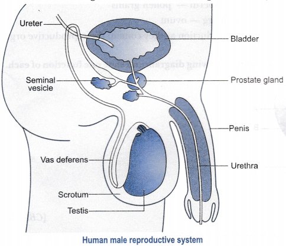
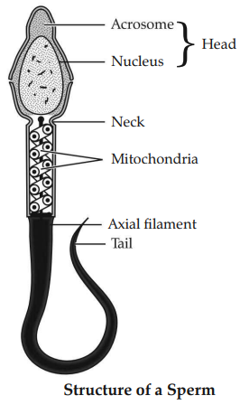
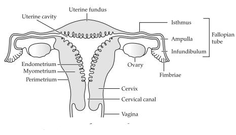
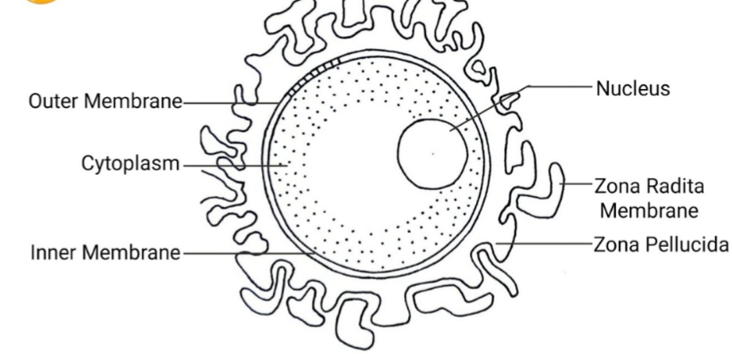
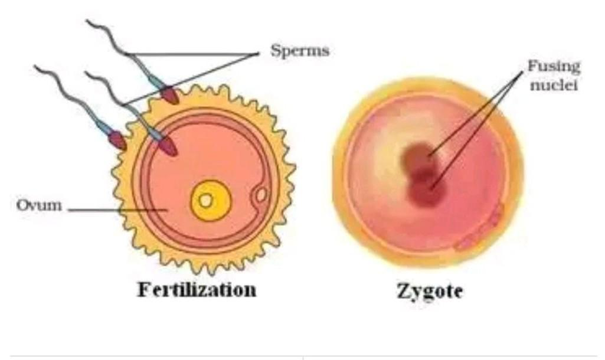
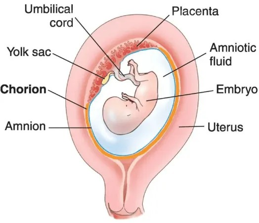
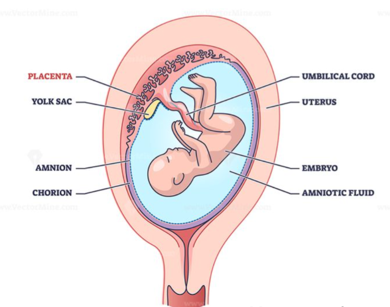

Reproduction is the biological process by which living organisms produce new individuals of their own kind.
Stability is provided by equalising the birth and death ratio. Thus, the rate of birth should approximately be equal to the rate of death.
The process of reproduction is necessary for preservation and increase in population of a species. The organisms would become extinct if they did not reproduce; the species to which they belong would become extinct once they are dead.
DNA copying is important in reproduction because it passes the parents’ characteristics to the offspring and also produces variations, which help the species survive and adapt over generations.
DNA copying is essential in reproduction because it copies the body’s blueprint, ensuring that the new organism inherits the same body design, while also allowing for small variations that help in evolution.
In sexual reproduction, DNA carries and transfers hereditary information from parents to offspring. It controls protein formation, ensures the inheritance of traits, and creates variations, which help in evolution and adaptation.
Reproduction is of two types:
The process of reproduction in which zygote is not formed, but gametes are formed either by amitotic or mitotic division is called as asexual reproduction.
Fission is a type of asexual reproduction in which one parent organism splits into two or more new organisms.
The new organisms formed are identical to the parent.
Example:
Amoeba (binary fission), Plasmodium (multiple fission).
Binary fission is an asexual reproduction in which one parent cell splits into two identical daughter cells.
It commonly occurs in unicellular organisms like Amoeba, Paramecium, and bacteria First, the nucleus divides (karyokinesis), then the cytoplasm divides (cytokinesis). Each daughter cell grows into an adult Amoeba.

Multiple fission is an asexual reproduction in which a single parent cell divides repeatedly to form many daughter cells at the same time. c.g. plasmodium.
Binary Fission | Multiple Fission |
|---|
One parent cell divides into two daughter cells. | One parent cell divides into many daughter cells. |
|---|
Occurs in favourable conditions. | Occurs in unfavourable conditions (organism forms cyst). |
|---|
Simple division of nucleus and cytoplasm. | Nucleus divides repeatedly before cytoplasm divides. |
|---|
Example: Amoeba, Paramecium | Example: Plasmodium |
|---|
Budding is an asexual mode of reproduction in which a new organism develops as an outgrowth (bud) from the parent body.
Budding in Hydra:
In Hydra, a small bud arises on the body due to repeated cell division at a specific spot. The bud grows into a small Hydra, develops tentacles, and eventually detaches from the parent to live independently.

Modes of reproduction in single cell organisms are:
[MP 2023] The process of getting back a full organism from its body parts is called neration.
Example: The simple animals like Hydra and Planaria show regeneration.
Planaria have a remarkable capacity to regenerate. If their body is cut into two or more pieces, each piece can grow into a complete new organism. This is possible due to the presence of highly active stem cells (neoblasts) that divide and differentiate to replace lost body parts.

The process by which some plants can reproduce asexually by their vegetative parts like roots, stem and leaves is called vegetative propagation. E.g., rose, sugarcane etc.
Vegetative propagation is done by the following methods:
(i) By underground stems: Normally, in adverse conditions aerial parts of modified derground stems dry and get destroyed. With the return of favourable conditions, their derground parts develop new aerial shoot and take part in reproduction.
Example: Ginger, Turmeric etc.
(ii) By aerial stems: Stems of such plants, take part in vegetative reproduction and mintain continuity of their species.
Example:
Sugarcane, Amarbel etc.
(iii) By leaves: Leaves develop adventitious buds and roots on their surface which produce in favourable conditions.
Example: Ajuba, Bryophyllum etc.
Mainly there are three artificial methods of vegetative propagation
Vegetative propagation is practised for growing some types of plants because-
Flowers that contain only male or female reproductive structures, are called unisexual flowers.
A bisexual flower is a flower that contains both male and female reproductive structures. Example - Rose, Mustard etc.
The transfer of pollen grains from anther to the stigma by agents like wind, water, insects etc., is called pollination.
There are two types of pollination:
The transfer of pollen grains from the anther of a flower to the stigma of the same flower is known as self-pollination.
The transfer of pollen from the anther of one flower to the stigma of the another flower, either of the same plant or of a different plant of the same species, is known as cross-pollination.
Self-pollination | Cross-pollination |
|---|---|
(1) Transfer of pollen occurs within the same flower or same plant. | (1) Transfer of pollen occurs between two different plants of the same species. |
(2) No need of external agents like wind, water or insects. | (2) Requires pollinating agents like wind, water, insects, birds. |
(3) Offspring are less variable and genetically similar. | (3) Offspring show more variation and better adaptability. |
(4) Sure and quick pollination. | (4) Not always sure, depends on pollinating agents. |
Pollination | Fertilisation |
|---|---|
(1) Transfer of pollen grains from anther to stigma. | (1) Fusion of male gamete with female gamete (egg). |
(2) It occurs on the surface of the stigma. | (2) It occurs inside the ovule |
The process of reproduction in which the male gametes and female gametes fused together is called sexual reproduction.
Examples:
Asexual Reproduction | Sexual Reproduction |
|---|
1. Involves one parent. | Involves two parents. |
|---|
2. Offspring are genetically identical. | Offspring show genetic variation. |
|---|
3. No gamete formation. | Gametes are formed and fuse. |
|---|
4. Occurs in simple organisms like Amoeba. | Occurs in higher organisms like humans and animals. |
|---|

The male reproductive system consists of organs that produce, store and transport sperm. The main organs are:
Produce sperm and the male hormone testosterone.
Maintains lower temperature for sperm formation.
Stores and matures sperm.
Male reproductive organs-
Function of testis in human-
Seminal Vesicles: Produce a nutritive fluid rich in fructose that provides energy to sperm and helps in their motility.
Prostate Gland: Secretes a milky, alkaline fluid that increases sperm survival by protecting them from the acidic environment of the female reproductive tract.
Together they form the major part of semen and help sperm in movement and survival.
The process of formation of sperms is called spermatogenesis.
It occurs in the testes.
Four sperms are formed from one primary spermatocyte.
Sperm is the male reproductive cell that is produced in the testes.
Structure:


The female reproductive system consists of ovaries, fallopian tubes, uterus, cervix, and vagina.
This system helps in egg production, fertilization, pregnancy, and childbirth.
Female reproductive organs-
Ovary
Fallopian tube (Oviduct)
Uterus
The ovary is a female reproductive organ that:
A female has two ovaries, one on each side of the uterus.
The vagina is a muscular, elastic tube that connects the cervix (opening of the uterus) to the outside of the body.
Functions of the Vagina
Fallopian tubes are the two tubes attached to the uterus, one on either side. Each tube is about 10-12 cm in length.
Function of Fallopian Tubes:
The process of formation of ovum is called oogenesis. It occurs in the ovaries.
A single ovum is formed from one primary oocyte.
Ovum is the female reproductive cell that is produced in the ovaries.
Structure

Spermatogenesis | Oogenesis |
|---|
1. The process of formation of sperms is called spermatogenesis; it occurs in the testes. | 1. The process of formation of ovum (egg) is called oogenesis; it occurs in the ovaries. |
|---|
2. Four sperms are produced from one primary spermatocyte. | 2. Only one ovum is produced from one primary oocyte. |
|---|
Male Gamete (Sperm) | Female Gamete (Ovum) |
|---|
1. The male gamete is called sperm. | 1. The female gamete is called ovum. |
|---|
2. It is long and motile. | 2. It is round/circular and non-motile. |
|---|
Fertilization is the process in which the male gamete (sperm) fuses with the female gamete (ovum) to form a zygote.
It is the first step of forming a new organism and restores the normal diploid number of chromosomes.
A zygote is the first cell formed after the fusion of a male gamete (sperm) and a female gamete (egg) during fertilisation.

Embryo is the developing baby up to 8 weeks after fertilisation.

The embryo gets nourishment through the placenta, which supplies it with food and oxygen from the mother’s blood.
The placenta is a special disc-shaped tissue that connects the embryo to the mother and provides nourishment.

Structure It is a disc embedded in the uterine wall. It has villi on the embryo’s side and blood spaces on the mother’s side.
Functions
Zygote | Embryo |
|---|
1. A zygote is formed by the fusion of male and female gametes. | 1. An embryo is formed by the continuous cell division of the zygote. |
|---|
2. It is the first stage of development after fertilisation. | 2. It is the early developmental stage of the baby up to 8 weeks in the uterus. |
|---|
Menstruation occurs when the egg released by the ovary is not fertilised. The thick uterine lining (full of blood vessels) is no longer needed, so it breaks down and comes out through the vagina as blood and tissue.
It usually lasts for 2–8 days.
Growth is a permanent increase in the size and number of cells, resulting in an increase in body size.
Stages of Growth in Animals
Puberty is the period of physical and hormonal changes that prepare boys and girls for reproduction.
The changes seen in boys during puberty:
The changes seen in girls during puberty:
In males it is 14-18 years and in females it is 12-16 years.
The rate of general body growth begins to slow down at this age because the reproductive tissues begin to mature.
Fertilization can be controlled by using different contraceptive methods.These methods prevent the sperm from meeting the ovum, thus controlling fertilization.
Contraceptive methods are methods that stop fertilisation or prevent the meeting of sperm and egg, so that pregnancy does not occur.
The reasons for adopting contraceptive methods could be -
Various methods of contraception are as follows-
Name of two contraceptive devices are-
HIV-Human Immuno Deficiency Virus.
AIDS is a serious disease caused by the HIV virus, which weakens the immune system, making the body unable to fight infections.
AIDS - Acquired Immuno Deficiency Syndrome.
Yes, AIDS is a transmittable disease.
The four reasons that causes AIDS are -